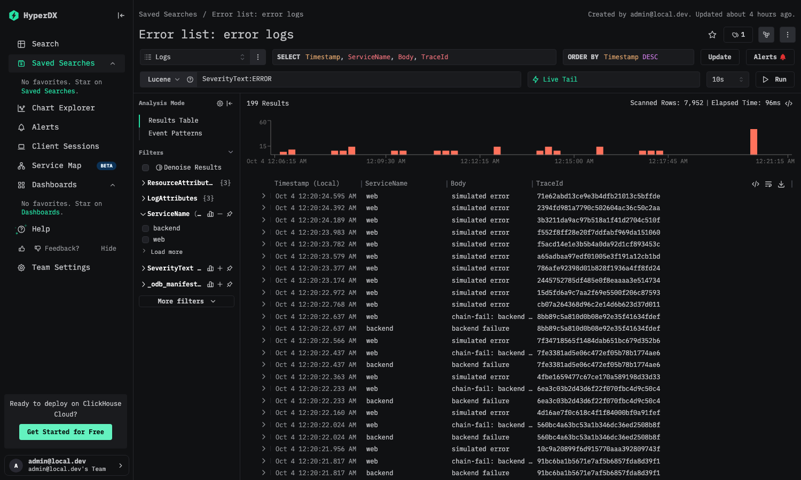
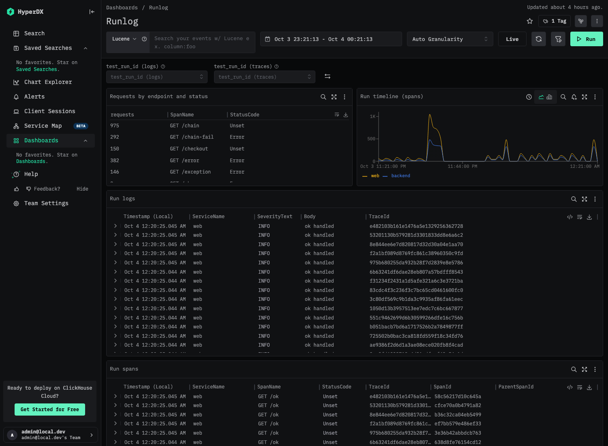

Using it · module 2 of 3
Finding your data
How to read the availability and latency dashboard, find failed requests and their logs, and follow one test run, with the exact definition behind every number.
After this module you can
- read the availability and latency dashboard and say how each number is defined,
- find the failed requests and the log lines that belong to them, and
- use the runlog to follow one test run.
The availability and latency dashboard
This module explains how to read the dashboards, the error list and the runlog in HyperDX, and how the numbers on them are defined. The dashboard Availability & Latency has 13 tiles. It is created from code, so the definitions below are the ones the screen uses.

/ok shows a few errors (see module 3).| Tile | Kind | What it computes |
|---|---|---|
| Availability (non-5xx / total) | Number | Server spans of web without error status, divided by all server spans of web. |
| Requests | Number | Count of server spans of web. |
| Errors (5xx) | Number | Count of those server spans with error status. The first alert watches this tile. |
| p95 latency (ms) | Number | 95th percentile of span Duration over the same spans, in milliseconds. |
| Availability over time | Line | The availability formula per time bucket. A bucket with no traffic is left empty, not drawn as 0%. |
| Latency p50 / p95 / p99 (ms) | Line | Three percentiles of Duration per time bucket. |
| Request rate by route | Line | Count of server spans per time bucket, one line per SpanName. |
| p95 latency by route (ms) | Line | The 95th percentile per time bucket, one line per SpanName. |
| Per-route SLI | Table | Per SpanName: requests, errors, p95 in milliseconds, and availability as (requests minus errors) divided by requests. |
| Error list: failed spans | Search | Spans with StatusCode Error: timestamp, service, span name, status message, trace id. |
| Error list: error logs | Search | Log lines with severity ERROR: timestamp, service, body, trace id. |
| app.requests by outcome | Line | The metric counter summed by outcome. HyperDX drops each cumulative series' first point, so this tile undercounts, and the span tiles are the reference. |
| In-flight requests | Line | The up-down counter http.server.active_requests. |
Source: tile definitions in stack/hyperdx/provision.py.
How availability, rate and percentiles are defined
Every number on the first nine tiles comes from one set of spans: the server spans of the web service, which is one span per request that web received. In the table this is SpanKind = Server and ServiceName = web. The backend's server spans and the client span are not counted, so a request through /chain counts once.
- Request rate is the count of those spans in a time bucket.
- Error means the span has error status. The test app sets that status when the response is HTTP 5xx, so
/error(500),/exception(500) and/chain-fail(502) are errors and/ok,/slow,/chainand/checkout(200) are not. - Availability is the count of spans without error status divided by the count of all those spans.
- Latency percentiles p50, p95 and p99 are computed from the span
Duration, which is stored in nanoseconds. The dashboard divides it by 1,000,000 and shows milliseconds.
A /slow request that takes longer than expected is still available. Availability here counts failures, and latency is a separate tile.
SLI calculator
Set the number of requests of each type and the duration of each type. The calculator applies the definitions above. The defaults are the request counts of the captured verification run, from evidence/ground-truth.json.
Availability and percentiles from counts
| Request | HTTP status | Requests | Duration (ms, illustrative) | 5xx errors | Availability |
|---|---|---|---|---|---|
GET /ok | 200 | ||||
GET /slow | 200 | ||||
GET /error | 500 | ||||
GET /exception | 500 | ||||
GET /chain | 200 | ||||
GET /chain-fail | 502 | ||||
GET /checkout | 200 |
190 non-5xx requests out of 225 is 84.44%. 35 failed with a 5xx status.
Inputs equal the captured run.
Worked check against the evidence
The captured run sent 100 + 20 + 20 + 5 + 50 + 10 + 20 = 225 requests. The failing types are /error (20), /exception (5) and /chain-fail (10), which is 35 requests, matching expected_http_5xx = 35. Then 190 of 225 succeeded, and 190 / 225 = 0.844444, which is the expected_availability in the file (0.844444). With the default inputs the calculator shows 84.44%.
Source: evidence/ground-truth.json, run course-evidence-002020. Expectations come from the contract table, not from observed telemetry, and module 9 shows the check that compares them with ClickHouse.
The error list
The dashboard has two error lists, and each is also a saved search: Error list: failed spans (spans with error status) and Error list: error logs (log lines with severity ERROR). The screenshot shows the log search.

Each row tells you four things: when the line was written, which service wrote it, what it said, and the trace id of the request it belongs to. The service and body show where and how it failed. In the screenshot, a web line chain-fail: backend ... and a backend line backend failure have the same trace id. They are the two ERROR lines of one /chain-fail request, one from each service. A row does not say which test run it came from and does not say whether the failure is still happening.
From a log line to its spans
The trace id is the join. Copy the trace id from an error row, search spans for that TraceId, and you get the request's server span, client span and backend spans, with the status and duration of each. Search logs for the same id to read every line the request wrote. Module 4 shows the same relationship on one captured trace. The span id on a log line then names the span that wrote it.
Following one test run
Every request the load generator sends carries a run id, and the app records it as the attribute test_run_id on spans, log records and metrics. The Runlog dashboard has four tiles and a filter on that attribute: a requests-by-endpoint-and-status table, a timeline of spans per service, the logs of the run, and the spans of the run. Select the run id in the filters and all four tiles show that run only. There are two filters, one for logs and one for traces, because the attribute lives in LogAttributes on logs and in SpanAttributes on spans.

The columns you will read
Spans are rows in otel_traces and log lines are rows in otel_logs. For the dashboards and searches in this module you need these columns.
| Table | Column | Meaning |
|---|---|---|
| otel_traces | SpanName | The operation, for example GET /chain. |
| otel_traces | SpanKind | Server, Client or Internal. The dashboard counts Server spans of web. |
| otel_traces | StatusCode | Unset or Error. Error is what the availability formula treats as a failure. |
| otel_traces | Duration | Span length in nanoseconds. The dashboards show milliseconds. |
| otel_traces | TraceId, ParentSpanId | The request, and the span that called this one. The root span's parent is empty. |
| otel_logs | Body | The log message. |
| otel_logs | SeverityText | INFO, ERROR and so on. |
| otel_logs | LogAttributes | A map of extra attributes, such as test_run_id. Spans have the equivalent SpanAttributes. |
Real rows of one request
These are the spans and logs of the captured GET /chain request, trace id db4b635984efdc74db9c685a6ad2fdaf. The durations are shown in milliseconds.
| ServiceName | SpanName | SpanKind | StatusCode | Duration (ms) | ParentSpanId |
|---|---|---|---|---|---|
| web | GET /chain | Server | Unset | 42.132 | (empty) |
| web | backend.Process | Client | Unset | 42.1 | dfe02fcabfcef1a4 |
| backend | backend.Process | Server | Unset | 6.445 | 68ba91820c84df47 |
| backend | backend.compute | Internal | Unset | 6.416 | c38377bb6f4575af |
| ServiceName | SeverityText | Body | SpanId |
|---|---|---|---|
| backend | INFO | backend processed | c38377bb6f4575af |
| web | INFO | chain handled | dfe02fcabfcef1a4 |
Source: ClickHouse otel.otel_traces and otel.otel_logs, captured 2026-10-03T14:20:34Z (evidence/trace-sample.json).
Why searches should be time-bounded and field-filtered
A search in a scan-priced system is billed on the data it reads, so a wide time range costs more even when it finds the same lines (module 1 shows the price model). In ClickHouse the log and trace tables are partitioned by day and have the service and the time in their sort key, so a short time range and a filter on the service let it skip most of the data it would otherwise read, and the cost shows up as a busier server and not as a larger bill. Both habits also make searches faster in either system. The screenshot above shows the kind of figure to look at: rows scanned compared with results returned. Module 1 has the explorer for the cost comparison, with its assumptions.
Check your understanding
All correct. Continue to module 6 to see how alerts are evaluated on the data you just read.